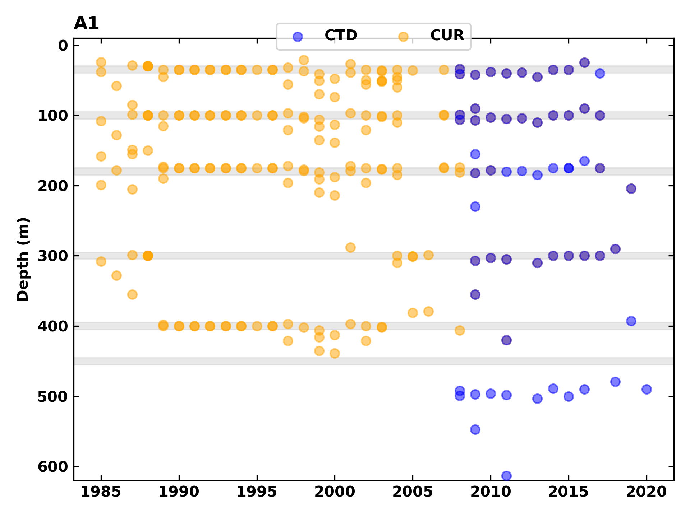

This page hosts time series plots of temperature and salinity data from the Institute of Ocean Sciences (IOS) Ocean Sciences Division (OSD) mooring stations, located off the west coast of BC.
Mooring data from station E01.
Mooring data from station SCOTT2.
Mooring data from station A1.
Mooring data from station HAK1.
Mooring data from station SRN1.
Mooring data from station CHAT3.
Mooring data from station JUAN2.
The following plots count how many measurements are available for each year of the data record. Separate plots are provided for each of temperature and salinity.


The following plots count how many measurements are available for each month of the data record. Separate plots are provided for each of temperature and salinity.


Plot showing the depths of CTDs and current meters on the mooring line for each deployment. Each point represents a CTD or current meter. The grey areas denote the coverage of each bin. Bins are centered on the depths 35m, 75m, and 92m with size 10m.
Plot showing the depths of CTDs and current meters on the mooring line for each deployment. Each point represents a CTD or current meter. The grey areas denote the coverage of each bin. Bins are centered on the depths 40m, 100m, 150m, 200m, and 280m with size 10m.

Plot showing the depths of CTDs and current meters on the mooring line for each deployment. Each point represents a CTD or current meter. The grey areas denote the coverage of each bin. Bins are centered on the depths 35m, 100m, 180m, 300m, and 400m with size 20m, with one bottom bin containing data between 450m and 520m; i.e., not from moorings displaced into significantly deeper water by boat strikes.
Plot showing the depths of CTDs and current meters on the mooring line for each deployment. Each point represents a CTD or current meter. The grey areas denote the coverage of each bin. Bins are centered on the depths 40m, 75m, and 130m, with size 10m.

Plot showing the depths of CTDs and current meters on the mooring line for each deployment. Each point represents a CTD or current meter. The grey areas denote the coverage of each bin. Bins are centered on the depths 15m, 40m, 100m, and 185m, with size 10m.

Plot showing the depths of CTDs and current meters on the mooring line for each deployment. Each point represents a CTD or current meter. The grey areas denote the coverage of each bin. Bins are centered on the depths 15m, 40m, 100m, and 185m, with size 10m.

Plot showing the depths of CTDs and current meters on the mooring line for each deployment. Each point represents a CTD or current meter. The grey areas denote the coverage of each bin. Bins are centered on the depths 15m, 100m, and 210m, with size 10m.

The data were binned into 10m bins centered on the depths 35m, 75m, and 92m to make these plots. Not all data from station E01 fit into these bins, particularly data from earlier years. Data are separated by instrument (current meter or CTD) and variable (temperature or salinity).
The data were binned into 10m bins centered on the depths 40m, 100m, 150m, 200m, and 280m to make these plots. All data from station SCOTT2 fit into these bins. Data are separated by instrument (current meter or CTD) and variable (temperature or salinity).
With one exception, the data were binned into 20m bins centered on the depths 35m, 100m, 180m, 300m, and 400m to make these plots. A bottom bin containing data below 450m was also used, excluding data from moorings displaced into significantly deeper water by boat strikes. Not all data from station E01 fit into these bins, particularly data from earlier years. Data are separated by instrument (current meter or CTD) and variable (temperature or salinity).
The data were binned into 10m bins centered on the depths 40m, 75m, and 130m to make these plots. Most data from station HAK1 fit into these bins. Data are separated by instrument (current meter or CTD) and variable (temperature or salinity).


The data were binned into 10m bins centered on the depths 15m, 40m, 100m, and 185m to make these plots. Most data from station SRN1 fit into these bins. Data are separated by instrument (current meter or CTD) and variable (temperature or salinity).


The data were binned into 10m bins centered on the depths 15m, 40m, 75m, and 150m to make these plots. All data from station CHAT3 fit into these bins. Data are separated by instrument (current meter or CTD) and variable (temperature or salinity).


The data were binned into 10m bins centered on the depths 15m, 100m, and 210m to make these plots. Most data from station SRN1 fit into these bins. Data are separated by instrument (current meter or CTD) and variable (temperature or salinity).


Current meter data from before 2007 and CTD data from after 2007 were combined and presented in these plots. The data were binned into 10m bins centred on the depths 35m, 75m, and 95m to make these plots. Daily means were computed for each day that temperature or salinity data were present. SST from cast CTD data is included in the plot for 35m temperature, in black. The cast SST data contain the first observation from each cast and are not averaged. The majority of the cast SST data are from the top 10m of the water column.
Only CTD data were used, given that all available current meter data overlapped with the CTD data. The data were binned into 10m bins centered on the depths 40m, 100m, 150m, 200m, and 280m to make these plots.
Current meter data from before 2008-04-03 and CTD data from after this date were combined and presented in these plots. The data were binned into 20m bins centered on the depths 35m, 100m, 180m, 300m, and 400m, with a 450m-and-below bottom bin, to make these plots.


Only CTD data were used, given that all available current meter data overlapped with the CTD data. The data were binned into 10m bins centered on the depths 40m, 75m, and 130m to make these plots.


Only CTD data were used, given that all available current meter data overlapped with the CTD data. The data were binned into 10m bins centered on the depths 15m, 40m, 100m, and 185m to make these plots.


Only CTD data were used, given that all available current meter data overlapped with the CTD data. The data were binned into 10m bins centered on the depths 15m, 40m, 75m, and 150m to make these plots.


Only CTD data were used, given that all available current meter data overlapped with the CTD data. The data were binned into 10m bins centered on the depths 15m, 100m, and 210m to make these plots.


The daily climatologies were computed from the daily mean data by taking the average for each day of the year over the years 1990-2020. This is a 30-year climatology due to the year 2007 having no temperature or salinity observations.


The daily climatologies were computed from the daily mean data by taking the average for each day of the year over the years 2016-2022.


The daily climatologies were computed from the daily mean data by taking the average for each day of the year over the years 1991-2020.


The daily climatologies were computed from the daily mean data by taking the average for each day of the year over the years 2016-2022.


The daily climatologies were computed from the daily mean data by taking the average for each day of the year over the years 2017-2022.


The daily climatologies were computed from the daily mean data by taking the average for each day of the year over the years 2019-2022.


The daily climatologies were computed from the daily mean data by taking the average for each day of the year over the years 2019-2022.


The daily mean anomalies were computed by subtracting the daily climatologies for the period 1990-2020 from the daily mean data.


The daily mean anomalies were computed by subtracting the daily climatologies for the period 2016-2022 from the daily mean data.
Daily mean anomalies were computed by subtracting the daily climatologies for the period 1991-2020 from the daily mean data.


The daily mean anomalies were computed by subtracting the daily climatologies for the period 2016-2022 from the daily mean data.


The daily mean anomalies were computed by subtracting the daily climatologies for the period 2017-2022 from the daily mean data.


The daily mean anomalies were computed by subtracting the daily climatologies for the period 2019-2022 from the daily mean data.


The daily mean anomalies were computed by subtracting the daily climatologies for the period 2019-2022 from the daily mean data.


The monthly mean data were computed from daily mean data.


Monthly mean data were computed from daily mean data.


The monthly mean data were computed from daily mean data.


The monthly mean data were computed from daily mean data.


The monthly mean data were computed from daily mean data.


The monthly mean data were computed from daily mean data.


The monthly climatologies were computed from the monthly mean data by taking the average for each month of the year over the years 1990-2020. This is a 30-year climatology due to the year 2007 having no temperature or salinity observations.


The monthly climatologies were computed from the monthly mean data by taking the average for each month of the year over the years 2016-2022.


The monthly climatologies were computed from the monthly mean data by taking the average for each month of the year over the years 1991-2020.


The monthly climatologies were computed from the monthly mean data by taking the average for each month of the year over the years 2016-2022.


The monthly climatologies were computed from the monthly mean data by taking the average for each month of the year over the years 2017-2022.


The monthly climatologies were computed from the monthly mean data by taking the average for each month of the year over the years 2019-2022.


The monthly climatologies were computed from the monthly mean data by taking the average for each month of the year over the years 2019-2022.


The monthly mean anomalies were computed by subtracting the monthly climatologies for the period 1990-2020 from the monthly mean data.
The monthly mean anomalies were computed by subtracting the monthly climatologies for the period 2016-2022 from the monthly mean data.
The monthly mean anomalies were computed by subtracting the monthly climatologies for the period 1991-2020 from the monthly mean data.


The monthly mean anomalies were computed by subtracting the monthly climatologies for the period 2016-2022 from the monthly mean data.


The monthly mean anomalies were computed by subtracting the monthly climatologies for the period 2017-2022 from the monthly mean data.


The monthly mean anomalies were computed by subtracting the monthly climatologies for the period 2019-2022 from the monthly mean data.


The monthly mean anomalies were computed by subtracting the monthly climatologies for the period 2019-2022 from the monthly mean data.


Data Products Team, Ocean Sciences Division
DFO.PAC.SCI.IOSData-DonneesISO.SCI.PAC.MPO@dfo-mpo.gc.ca


{kind=link}
{kind=link}
{kind=link}
{kind=link}
{kind=link}
{kind=link}
{kind=link}
{kind=link}
{kind=link}
{kind=link}
{kind=link}
{kind=link}
{kind=link}
{kind=link}
{kind=link}
{kind=link}
{kind=link}
{kind=link}
{kind=link}
{kind=link}
{kind=link}
{kind=link}
{kind=link}
{kind=link}
{kind=link}
{kind=link}
{kind=link}